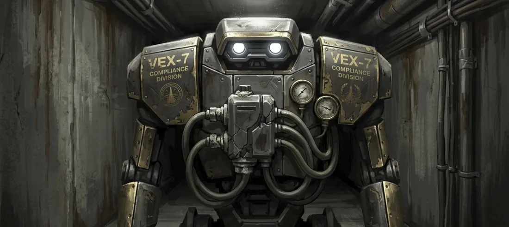
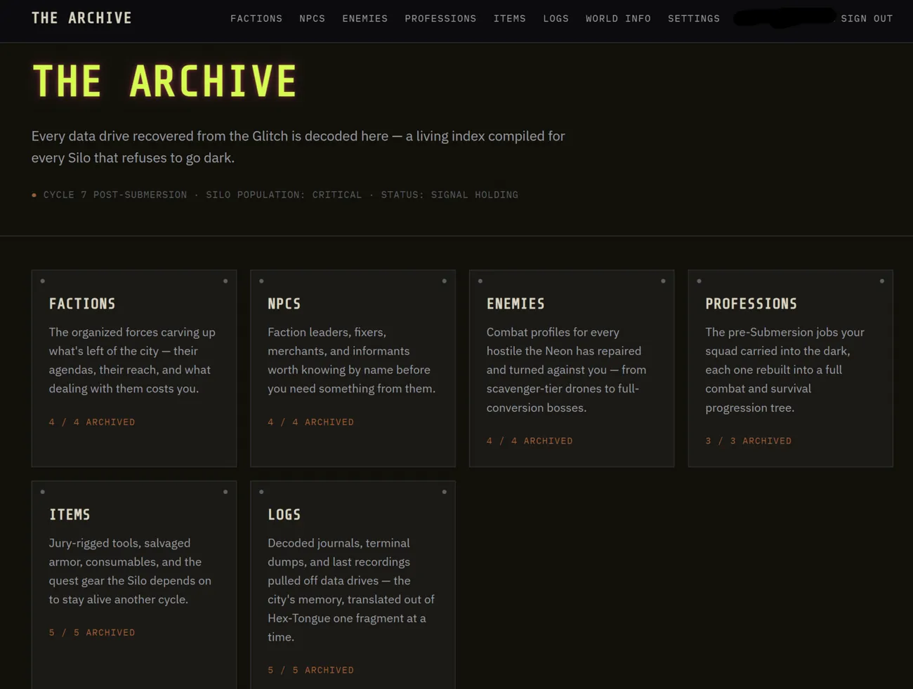
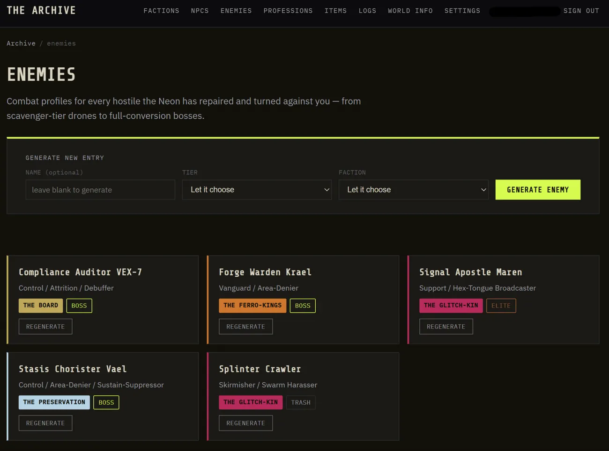

● WORLD ARCHIVE SYSTEM
Chronicled turns your campaign into a living dossier. Describe your world once — then generate NPCs, monsters, items, and lore on demand, each one filed automatically with matching portrait art.
● 10 free generations, no card required
Bestiary Entry — Auto-Filed
Control / Attrition / Debuffer

"Your oxygen allotment has been reviewed. The discrepancy is... substantial."
| Body | Reflex | Knowledge |
|---|---|---|
| 14 | 10 | 20 |
Process
No manual file editing, no juggling five tabs of scattered notes. Describe your world once, then generate what the session needs.
Guided setup — tone, genre, factions, stat system. Type your own answers or let it generate a starting point.
Pick a category and generate content grounded in your world's own established lore — never a fixed template.
Every entry lands in your browsable archive with portrait art already attached — searchable and cross-referenced.
Bundle a Quest, Campaign, or your whole world into a print-ready PDF for the table.
File 01
A guided setup walks you through tone, genre, and factions — or generates any piece of it for you if you'd rather start from a spark than a blank page.
File 02
Pick a category and generate real content grounded in your world's own lore — a full character bible, a stat block, an item, a faction, whatever the session needs.
File 03
Every entry lands in your browsable archive with matching portrait art already attached — searchable, cross-referenced, ready before your next session.
Coverage
Everything a campaign needs, generated from the same grounded lore — so fifty separate sessions still read as one world.
Category 01
Full character bible, personality, motivation, and a branching sample dialogue tree.
Category 02
Complete stat blocks with real computed combat math and a full ability kit.
Category 03
Weapons, armor, consumables, and quest relics with derived stats where they matter.
Category 04
Full leveling tree, signature abilities, and a late-game evolution.
Category 05
Deep lore plus a living roundup of every NPC, enemy, and item tied to it.
Category 06
Found-text: recordings, terminal entries, and journals for environmental storytelling.
Category 07
Full player-character sheets — class, attributes, backstory, personality, and how they connect to the world.
Category 08
Places your world actually visits — grounded in its factions and its danger, with a computed world map.
Try it
A small illustrative simulation of the core loop — no account, no backend call. The real thing runs against your own world's lore; this one runs a single canned example.
The real thing
What you're looking at below is the actual archive — live screenshots, not illustrations of an idea.


Under the hood
The model handles narrative judgment — voice, motivation, tone. Anything that needs to be exact — stat math, formatting, cross-references — is computed by the backend, every time.
Compliance Auditor VEX-7 — Computed Stats
| Stat | Value | Formula |
|---|---|---|
| Max Health | 70 | (Body×2)+(Sanity×2)+Base |
| Max Energy | 74 | (Knowledge×2)+(Fate×2)+Base |
| Dodge Chance | 27.5% | Base+(Reflex/4)+(Skill/4) |
| Crit Chance | 26% | Base+(Fate/3)+(Skill/5) |
Air Tax Assessment Active
Applies a stacking "Oxygen Debt" DOT — damage increases 30% per stack, up to 4 stacks, also reducing the target's Body-derived max HP for the duration.
Where this came from
Chronicled didn't start as a product — it started as the archive for a single personal setting, a neon-soaked survival world called Echoes of the Neon. Keeping that world's NPCs, factions, and bestiary consistent by hand across dozens of sessions is what the generation-and-filing pipeline was actually built to solve.
Once that pipeline worked, the obvious next step was pulling the setting-specific parts out — palette, stat formulas, category labels, tone — so any GM could point the same engine at their own world instead of ours. That's what's live today: the same tool, generalized for any world.
Get Started
10 free generations, no card required. See pricing for what's next once you need more.
Start Now